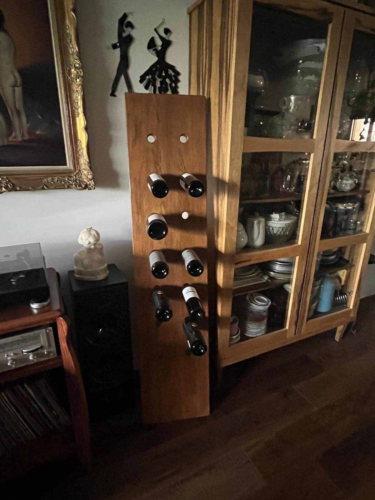

Alongside my work in complementary medicine, I continue to nurture another long-standing love of mine – creating woodwork with soul and character. In my workshop in Abirim, in the Galilee, I make furniture and special wooden pieces for people from all over the country who value handcraft, quality and attention to the smallest details. I create my pieces in my free time, at my own pace, without pressure and without shortcuts, out of joy in the process and in the craft itself. So if you are looking for something special, made with love and patience, and you are not in a hurry to receive it – I would be happy to make it for you.
My Work
Solid wood living room bookcase
Made of European oak

Wood and glass display cabinet
Made of African walnut

Solid wood coffee table
Made from a half tree trunk – Israeli pine


Record player cabinet
Made of mahogany

Wine bottle rack
Made of European oak
A wooden board resting on a single leg, simple and unique
 Photographed in the workshop in Abirim
Photographed in the workshop in Abirim
In the client's homeWooden kitchen shelves
Made of Israeli pine
Two shelves with a natural live edge


White solid wood doors
Made of European beech

Want to learn about my work in complementary medicine too? Visit the website
Want a piece of furniture made especially for you? Send me a message.
Chat with me on WhatsApp